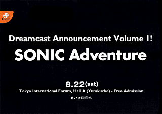

| Famitsu Train | |
|  | |
| Starting today, the Yamanote Line will announce the production launch of Sonic's latest work! | |
|
To commemorate the 500th issue of Famitsu Weekly, a Famitsu train will be running on the Yamanote Line in Tokyo from July 16 to 31,
and Sonic will be taking up the entire advertising space on the window of the train!
The Yamanote Line is a circular line that goes around 13 times a day, so if you wait an hour, you're bound to come to one of the inner/outer trains! It's only for a limited time, so get on it! Now, let's go around Tokyo with Sonic! | |
| SONIC TEAM INFORMATION | |